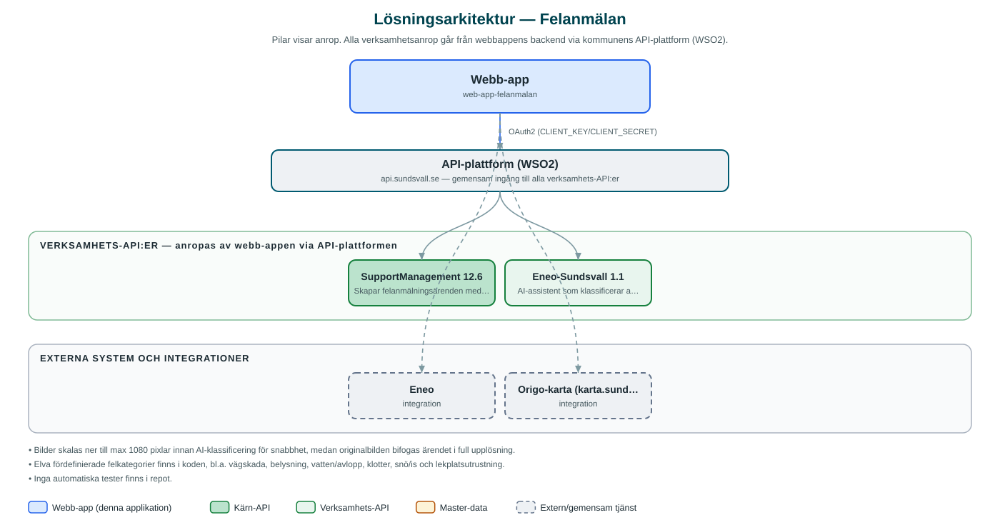

Felanmälan
Öppen e-tjänst där invånare enkelt rapporterar fel och brister i den offentliga miljön med bild, kartposition och beskrivning.
Om applikationen
Felanmälan låter invånare rapportera fel och brister i Sundsvalls offentliga miljö, till exempel skador på vägar, trasig belysning, klotter, nedskräpning eller problem med lekplatser. Anmälan görs i en enkel guide där man tar eller laddar upp bilder, markerar platsen på kommunens karta och beskriver felet.
När anmälan skickas in klassificeras den automatiskt med AI utifrån bild och beskrivning, så att den hamnar i rätt kategori – exempelvis vägskada, belysning, snö och is eller park och grönytor – och skapas som ett ärende i kommunens ärendehanteringssystem.
Tjänsten kräver ingen inloggning. Kontaktuppgifter är frivilliga och anges bara om man vill ha återkoppling.
Det här stödjer applikationen
- Guidad felanmälan – Stegvis guide där invånaren beskriver felet, laddar upp bilder och granskar sin anmälan innan den skickas.
- Kartmarkering – Platsen markeras på kommunens karta (Origo/karta.sundsvall.se).
- Automatisk AI-klassificering – Bild och beskrivning analyseras av en AI-assistent som föreslår rätt felkategori, med reservkategori om AI inte är konfigurerad.
- Ärende skapas automatiskt – Anmälan blir ett ärende i kommunens ärendehanteringssystem med bilderna som bilagor.
- Frivillig återkoppling – E-post eller telefonnummer kan lämnas om invånaren vill bli kontaktad.
Teknisk dokumentation
Nedan beskrivs hur applikationen är uppbyggd, vilka API:er den använder och vad som krävs för att driftsätta den. Informationen är härledd ur källkoden och dess konfiguration på GitHub.
Arkitektur

Applikationen består av en webbaserad frontend (Next.js 15 (App Router), React 19, i18next, Origo-kartklient) och en backend (Node.js, Express 4, TypeScript, bildbehandling med sharp) som utvecklas i samma kodbas. Verksamhetsanrop går via kommunens gemensamma API-plattform (WSO2) – frontend pratar aldrig direkt med underliggande system. Övriga integrationer som förekommer i koden: Eneo, Origo-karta (karta.sundsvall.se, GeoServer WMS/WFS), WSO2 API-gateway.
Teknikstack
- Frontend: Next.js 15 (App Router), React 19, i18next, Origo-kartklient
- Backend: Node.js, Express 4, TypeScript, bildbehandling med sharp
API-beroenden
Applikationen konsumerar följande API:er via kommunens API-plattform. Versionerna är hämtade ur källkodens API-konfiguration.
| API | Version | Användning |
|---|---|---|
| SupportManagement | 12.6 | Skapar felanmälningsärenden med bilagor i kommunens ärendehantering. |
| Eneo-Sundsvall | 1.1 | AI-assistent som klassificerar anmälans kategori utifrån bild och beskrivning. |
Konfiguration och driftsättning
- Backend: .env.example med API_BASE_URL, CLIENT_KEY/CLIENT_SECRET mot WSO2
- ENEO_ASSISTANT_ID och ENEO_API_KEY för AI-klassificeringen (tjänsten fungerar utan, då används standardkategori)
- MUNICIPALITY_ID och NAMESPACE styr vilket ärendeutrymme anmälningarna hamnar i
- Frontend: .env.example kopieras till .env
Noterbart ur källkoden
- Bilder skalas ner till max 1080 pixlar innan AI-klassificering för snabbhet, medan originalbilden bifogas ärendet i full upplösning.
- Elva fördefinierade felkategorier finns i koden, bl.a. vägskada, belysning, vatten/avlopp, klotter, snö/is och lekplatsutrustning.
- Inga automatiska tester finns i repot.
Källkod
Källkoden är öppen och finns hos Sundsvalls kommun på GitHub. I källkodsförrådet finns även instruktioner för att klona, konfigurera och starta applikationen i egen miljö.